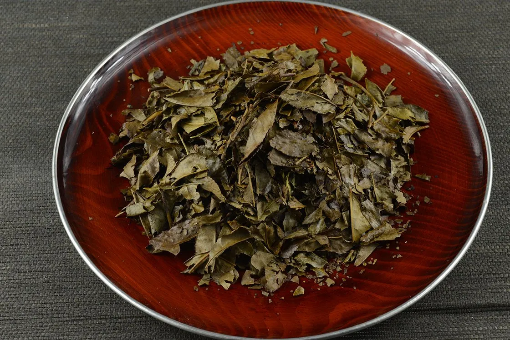
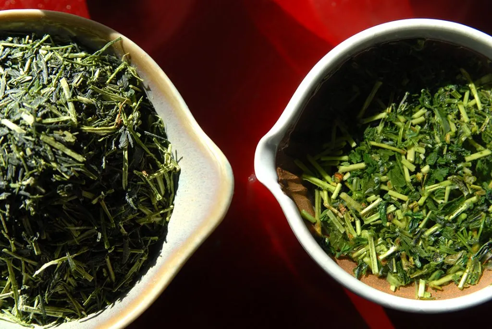

Tè
Che cosa rimane quando ce ne andiamo?
È un dato di fatto che quello facciamo, in piccolo o in grande, lascia un'impronta su questa
terra. Semplicemente le interazioni che abbiamo avuto con le persone che ci sono state vicine
condizionano e spesso cambiano i caratteri: come i genitori formani i figli, definiscono
una morale, un modo di percepire il mondo, così questi a loro volta faranno lo stesso
con qualcun'altro. Nel mondo ci si passa questo testimone, ed è come un filo rosso che
trascende il tempo. Alcune cose vengono consegnate direttamente al mondo, come potrebbe
essere un quadro di Dalí, altre invece passano più silenziose di generazione in generazione.
Ho iniziato a coltivare quello che hai lasciato.
Mi segno qualche appunto qua sotto, sperando di poter ispirare anch'io un giorno qualcuno,
come hai fatto te con me.
Tipologie di tè
Con la parola tè si identificano le bevande ottenute dalla pianta camellia sinensis (ovvero la pianta del tè). Esistono poi diverse tipologie di tè, tutte ottenute partendo dalle foglie della stessa pianta, e cambiando solamente il tipo di lavorazione. Le 6 tipologie principali di tè sono:
- Tè verde (green tea).
- Tè bianco (white tea).
- Tè giallo (yellow tea).
- Tè azzurro (oolong tea).
- Tè nero (black tea).
- Tè scuro (dark tea).
La pianta del tè
La pianta del tè è una pianta perenne che predilige i climi caldi e umidi. Nelle foglie troviamo 3 composti interessanti:
- Polifenoli: Rappresentano in percentuale il 30% del peso della pianta, una cosa folle. Sono composti iper studiati dal momento che sono presenti con buona approssimazione in tutte le piante, e sono ottimi per la salute. Una funzione fondamentale dei polifenoli è quella di proteggere la pianta dalle radiazioni UV. Questo è importante al momento della raccolta, infatti nelle piantagioni di tè si ombreggia la pianta già 20 giorni prima della raccolta. In questo modo diminuisce la produzione di polifenoli, e il gusto finale risulta meno astringente.
- L-teanina: La pianta del tè è l'unica pianta che sintetizza naturalmente la L-teanina, un amminoiacido non proteico che dà ottimi benefici per la salute. A differenza dei polifenoli, la L-teanina non è un composto molto studiato (complice il fatto che si trovi unicamente in queste piante), tuttavia è appurato il fatto che la L-teanina induce un effetto calmante e anti-ansia, inoltre lavora in sinergia con la caffeina per indurre una mentalità cencentrata e meditativa (diversamente dalla caffeina pura che genera più nervosismo). Il sapore è dolce e umami, ed è importante perchè contrasta l'amarezza e l'astringenza dei polifenoli.
- Caffeina: Ci sono al mondo più di un centinaio di piante che producono naturalmente caffeina, tuttavia la pianta del tè è quella che ne contiene di più di tutte (a parità di peso), persino più della pianta del caffè. La pianta del tè usa la caffeina come veleno per gli insetti che vogliono morderla, ed è per questo che ha un sapore molto amaro.
Processo di produzione
Il processo di lavorazione del tè non prevede l'aggiunta di ingredienti esterni. Prevede invece l'utilizzo delle seguenti tecniche:
- Withering: La fase di appassimento.
- Rolling: La fase di arrotolamento.
- Bruising: La fase di ammaccatura.
- Fixing: La fase di fissaggio.
- Fermentation: La fase di fermentazione.
- Drying: La fase di essiccazione.
Queste tecniche, usate in modo diverso di caso in caso, trasformano la foglia grezza di tè in uno dei 6 tipi principali di tè, così come descritto nella tabella che segue. Ognuna di queste categoria ha una componente chiave della lavorazione, sottolineata in tabella e descritta in dettaglio in seguito.
| Step 1 | Step 2 | Step 3 | Step 4 | Step 5 | Step 6 | Tipologia | |
|---|---|---|---|---|---|---|---|
| Foglia di tè | Withering (48h) | X | X | X | X | Drying | Tè Bianco |
| Foglia di tè | Withering (5h) | Bruising | Fixing (220 C°) | Rolling | X | Drying | Tè Oolong |
| Foglia di tè | Withering (5h) | X | X | Rolling | Fermentation (4h) | Drying | Tè Nero |
| Foglia di tè | X | X | Fixing (220 C°) | Rolling | X | Drying | Tè Verde |
| Foglia di tè | X | X | Fixing (200 C°) | Rolling | Yellowing | Drying | Tè Giallo |
| Foglia di tè | X | X | Fixing (200 C°) | Rolling | Post-Fermentation (48h) | Drying | Tè Scuro |
Tè Bianco
Il tè bianco è quello con il processo di lavorazione più semplice, essendo composto solo da due passaggi.- WITHERING (48h). È il passaggio chiave. L'obiettivo di questo passaggio è costruire un profilo aromatico fruttato, floreale e dolce, riducendo l'astringenza. L'appassimento funziona in modo molto semplice: si prendono le foglie e le si stendono a terra per farle asciugare all'aria. In questo modo appassiscono e cambiano profumo e sapore. Nel dettaglio: quando stacchiamo le foglie dalla pianta, queste sono "ancora vive", nel senso che i processi metabolici ed enzimatici continuano anche se le foglie sono state staccate dalla pianta. Quando costruiamo il profilo aromatico del tè bianco, facciamo affidamento esattamente su questi enzimi, in particolare mettendo le foglie al sole queste iniziano a percepirlo (subiscono uno stress da siccità) e vanno in carenza di acqua. La foglia del tè risponde allo stess da siccità attivando una serie di meccanismi, in particolare crea delle molecole specifiche (terpenoidi) che aiutano la pianta in queste situazioni. La cosa buona è che i terpenoidi hanno un odore floreale e fruttato molto dolce. Pertanto facendo appassire le foglie stiamo effetticamente costruendo il profilo aromatico del prodotto finale.
- DRYING. La fase di essiccazione ha due scopi principali:
- Abbassare la percentuale di acqua nelle foglie, diciamo sotto il 5%, per evitare che si faccia della muffa durante il trasporto quando viene venduto il prodotto.
- Permette di lavorare ancora sul sapore. Questa è una cosa tecnica che non ho capito molto, dovrebbe c'entrare in qualche modo la reazione di Maillard.
Tè Oolong
Il passaggio chiave di questo tè è il bruising, con il quale le foglie vengono fatte saltellare in opportuni contenitori, in modo da stressarle ulteriormente e stimolare una nuova reazione enzimatica. Vediamo tute le fasi della lavorazione di questa tipologia di tè.- WITHERING (5h).
- BRUISING. Le foglie vengono praticamente fatte saltare per un paio di minuti, dopodochè vengono fatte riposare per un'ora, e tutto viene ripetuto per dai 4 agli 8 cicli. In questo modo le foglie vengono nuovamente stressate (con uno stress diverso) perchè è come se venissero ripetutamente colpite (sperimentano un po' l'analogo che sperimenta il nostro corpo quando gli procuriamo dei lividi). A fine processo le foglie sono tutte ammaccate, a tratti di colore rosso-rame. Quando le foglie hanno raggiunto il grado voluto di aroma, vorremmo che questo profilo aromatico non cambiasse più, vorremmo poter fermare l'attività enzimatica all'interno delle foglie. Questa necessità ci porta allo step successivo della lavorazione del tè Oolong.
- FIXING (220 C°). Le foglie vengono portate a una temperatura molto elevata per disattivare l'attività enzimatica nelle foglie.
- ROLLING. Le foglie vengono arrotolate con appositi macchinari. Questa fase ha 2 scopi:
- Visto che in questa fase le foglie si spezzano, è più facile che rilascino aromi quando vengono messe in infusione. 5 dei 6 tipi principali di tè prevedono questa fase, con l'unica eccezione del tè bianco, il quale ha infatti bisogni di tempi di infusione più lunghi e di temperature più alte.
- Con questa fase si rompono (ulteriormente, rispetto alla fase di appassimento) le barriere che separano gli enzimi dai loro substrati. A differenza di prima, ora questa rottura avviene in maniera molto più massiccia.
Tè Nero
Il passaggio chiave di questo tè è la fermentazione, durante la quale si ossidano alcuni polifenoli del tè (le catechine), cosa che influenza il colore (rosso rubino), il sapore (meno stringente, più dolce) e il profumo (più morbido).- WITHERING (5h).
- ROLLING.
- FERMENTATION. In questa fase si cerca di creare il miglior contesto per favorire la fermentazione del tè. Le foglie vengono ammucchiate e vengono messe in una stanza in cui l'umidità è molto alta. È molto importante che la fermentazione avvenga in presenza di ossigeno.
- DRYING.
Tè Verde
- FIXING. L'obiettivo principale nella produzione del tè verde è quello di fermare l'attività enzimatica subito dopo la raccolta, in modo da preservare il colore e il profumo originale delle foglie. Esistono diversi modi di effettuare questa fase: possono variare i tempi di fixing, le temperature di fixing, oppure gli strumenti utilizzati per il fixing. Ad esempio, in Giappone in questa fase si utilizza una sorta di forno a vapore (che dona al tè un'aroma più grasso, più vegetale), mentre in Cina si usano delle wok (che danno invece un sapore più tostato, tipo di nocciola).
- ROLLING.
- DRYING.
Tè Giallo
Il passaggio chiave di questo tè è lo "Yellowing". L'obiettivo è ricreare un po' le caratteristiche aromatiche del tè verde, ma con un'astringenza minore, aumentando contemporaneamente il sapore di dolce e salato.- FIXING (5h). Questa fase viene fatta a una temperatura più bassa rispetto agli altri tè. Non si vuole infatti inibire completamente l'attività degli enzimi, ma si punta ad eliminarne circa il 95%.
- ROLLING.
- YELLOWING. L'idea è semplicemente quella di ammucchiare le foglie. Succedono 3 cose:
- Alcune catechine si ossidano in modo non enzimatico. Ovvero, si ossidano con l'ossigeno. È importante notare che questa cosa succede sempre, ovvero anche nelle altre tipologie di tè, solo che avviene a una velocità molto più lenta rispetto alla velocità con cui lavorano gli enzimi. In questo caso si nota di più perchè di enzimi che lavorano ce ne sono pochissimi.
- Il 5% degli enzimi rimasti ossidano le catechine (quindi c'è anche un po' di ossidazione enzimatica). Il risultato di queste due ossidazioni è che migliora la componente dolce/salata e viene ridotta l'astringenza.
- I microbi presenti nell'aria o sulle foglie iniziano a usare i priprio enzimi per scomporre alcuni composti presenti nelle foglie.
- DRYING.
Tè Scuro
Il passaggio chiave di questo tè è la post-fermentazione. L'obiettivo è ridurre l'astringenza e aumentare il sapore di dolce/salato. A differenza del tè giallo, qua si punta a aumentare molto di più il sapore dolce/salato. La post-fermentazione è analoga all'ingiallimento, solo che avviene per molto più tempo (2 giorni).- FIXING.
- ROLLING.
- POST-FERMENTATION. In questa fase le foglie passano dal verde al giallo al marrone.
L'infusione
L'obiettivo di una buona infusione è ottenere un sapore pieno e bilanciato. Per farlo occorre che i tre componenti aromatici principali che compongono il tè (catechine, l-teanina e caffeine) siano correttamente bilanciati. I fattori che influenzano il risultato finale durante l'infusione sono tre: la temperatura dell'acqua, il tempo di infusione, e il rapporto foglie/acqua.
- La temperatura dell'acqua. Temperature alte (diciamo 100 C°) favoriscono l'estrazione delle catechine e delle caffeine. In generale, a partire dagli 80 C° in su, l'estrazione delle catechine e caffeine aumenta esponenzialmente, il che comporta un sapore molto più astringente (questo è dovuto molto più alle catechine che alle caffeine). Viceversa, la l-teanina si estrae in modo ottimale a 80 C°. Estraendo a temperature più elevate si estraggono più catechine, con un sapore di conseguenza tendenzialmente più amaro del tè. Questo fenomeno è più o meno marcato a seconda della tipologia di tè che stiamo utilizzando, ad esempio il tè verde è pregno di catechine (e pertanto molto facile da rovinare, anche in modo eclatante), motivo per cui si infonde a 80 C°. Il tè post-fermentato invece è praticamente privo di catechine, e si infonde tranquillamente a 100 C°. Tutti gli altri tè si infondono a temperature comprese fra gli 80 e i 100 gradi, a seconda poi della variante specifica. L'unica eccezione è il te bianco, che si infonde di solito a 95 C°, perchè le foglie sono ancora integre ed è più difficile andare in estrazione.
- Tempo di infusione. I diversi composti presenti nella foglia di tè vengono estratti a velocità diverse. In particolare, la l-teanina e le caffeine impiegano circa 3 minuti prima di essere completamente estratte, mentre le catechine impiegano 45 minuti. Questo significa che se lasciamo in infusione il tè per più di tre minuti, tutto quello che estrarremo da quel momento in poi saranno solo catechine, con un conseguente sapore molto più amaro.
- Rapporto foglie/acqua. Di base non è rischioso cambiarlo. Semplicemente si ottiene un tè più o meno scialacquato.
Capire la temperatura dell'acqua
Di seguito un breve recap con le indicazioni generali sulla temperatura dell'acqua a seconda della tipologia di tè:
- 80°C per i tè verdi giapponesi.
- 80 - 90°C per gli altri.
- 95°C per i tè bianchi;
- 100°C per i tè neri.
Quando ho deciso di voler infondere i tè alla temperatura corretta, mi sono scontrato con un problema abbastanza grosso, ovvero capire la temperatura dell'acqua nel pentolino. Online ho trovato degli ebollitori regolabili che promettevano di portare l'acqua alla temperatura desiderata, ed ero lì lì per comprarne uno, quando mi sono chiesto: "Ma come facevano in Cina mille anni fa a portare il tè alla temperatura che volevano?". Ho quindi iniziato a cercare, e ho trovato un vecchio manuale cinese (il Cha Jing, il Canone del tè, di Lu Yu), che descrive minuziosamente ogni passaggio della preparazione del tè, dalla coltivazione alla lavorazione fino al consumo. In particolare, riguardo alla bollitura dell'acqua, ci dà alcune indicazioni utilizzando immagini provenienti dal mondo acquatico. I paragoni del tempo probabilmente sono poco congeniali tanto a me quanto a chi legge, quindi li ho riproposti con degli oggetti più facili da immaginare.
- Occhio di gamberetto (bollicine di champagne). Le bollicine sono piccole come occhi di gamberetto, iniziano a salire in superficie e il vapore è appena visibile. L'acqua ha raggiunto una temperatura di circa 70-76°C.
- Occhio di granchio (lenticchie). Quando le bollicine si fanno leggermente più grandi come occhi di granchio e il vapore inizia ad essere ben visibile e a salire verso l'alto, la temperatura è di circa 76-82°C.
- Occhio di pesce (piselli). Le bolle sembrano quasi come perle ed è presente molto più vapore, la temperatura è di circa 82-88°C.
- Collana di perle. Le bolle sembrano collegate l'una all'altra in un flusso continuo, siamo a circa 88 - 94°C.
- Torrente furioso. L'acqua è quasi ad ebollizione, le bolle sono grandi e con un flusso costante, siamo a circa 98°C
Focus: tè verde
In questa sezione provo a delineare un quadro generale delle varie tipologie di tè verde. I tè verdi possono essere grosso modo divisi in 4 famiglie. Innanzitutto esistono due tipi di coltivazione che riguardano i tè verdi: nel primo caso le piante sono sottoposte alla luce solare diretta, mentre nel secondo caso la piantagione viene coperta con grandi reti mimetiche o con paglia di riso, privando così le piante della luce solare diretta. A queste due categorie si aggiungono i tè ottenuti dalla lavorazione degli scarti delle due famiglie sopra, e quelli ottenuti con lavorazioni diverse. Di seguito una scaletta schematica:
- Tè sottoposti alla luce solare
- Sencha
- Bancha
- Tamaryokucha
- Tè ombreggiati
- Gyokuro
- Kabusecha
- Tencha
- Tè ottenuti dagli scarti di lavorazione
- Kawayanagi
- Kukicha e Karigane
- Jinko o Mecha
- Konacha
- Altre lavorazioni
- Hojicha
- Genmaicha
Tè non ombreggiati
In questo tipo di coltivazione le piante vengono cresciute libere, sottoposte alla luce solare in modo diretto e naturale. Principalmente distinguiamo tre diversi tipi di tè in questa categoria.
Sencha
Il Sencha è il tè verde giapponese più popolare e conosciuto nel mondo. Viene prodotto da foglie intere raccolte nella maggior parte dei casi con macchine. Dopo la raccolta le foglie vengono cotte a vapore per 15-45 secondi per evitare la loro ossidazione. In seguito vengono rullate nella tipica forma cilindrica simile ad aghi di pino, per poi essere asciugate e tostate. Questi processi fanno diminuire il contenuto in acqua delle foglie fino al 5%, donando loro una fragranza e un sapore più intensi, con un conseguente e significativo aumento qualitativo. Ha un sapore rinfrescante, verde ed erbaceo. Il Sencha ha, a sua volta, delle sottocategorie e i sapori naturalmente variano in base alla tipologia e ai loro standard di produzione. Tra le sottocategorie più note troviamo: Shincha, Asamushi, Chumushi, Fukamushi e il Sencha in polvere.
Bancha

Le foglie più in basso nella pianta del tè, ovvero quelle che rimangono sulla pianta dopo le
prime raccolte in primavera, diventeranno a fine inverno dell’anno successivo Bancha.
Il mantenimento delle piantagioni dopo l’inverno comporta la pulizia dello strato fogliare
inferiore. Per deviare l’energia della pianta verso i nuovi germogli, si raccolgono e
si essiccano le vecchie foglie e gli steli dell’anno precedente.
Oltre ad essere semplicemente essiccate, le foglie possono essere anche tostate o affumicate.
Tamaryokucha
In questo tè le foglie (invece di essere rullate in forma di aghi di pino
come nel caso del Sencha) vengono arrotolate come avviene con i tè verdi cinesi.
Il Tamaryokucha ("tè a spirale, arrotolato") è una specialità di Kyushu, tè verde di alta qualità,
comunemente conosciuto anche come Guricha ("tè riccio"). Esistono due diverse tecniche di produzione del Tamaryokucha; lo stile cinese in cui le foglie
vengono cotte/tostate in wok poi rullate, e lo stile giapponese, in cui le foglie vengono cotte al vapore e poi rullate.
Il suo infuso è di colore giallo dorato,
ha un sapore piccante, fruttato, con un lungo retrogusto mandorlato e un aroma profondo con toni
di agrumi, erba e frutti di bosco.
Tè ombreggiati
La durata dell’ombreggiamento dipende dal tè che il produttore intende creare. Privando le piante della luce solare si riduce la produzione di polifenoli, rendendo il tè meno astringente.
Gyokuro
Il Gyokuro è un tè verde ombreggiato tradizionalmente con paglia di riso. Per la preparazione del
Gyokuro le foglie vengono ombreggiate per 3 settimane prima della raccolta.
Dopo la raccolta i germogli e le piccole foglie giovani che lo circondano,
vengono cotte a vapore e alla fine rullate a macchina o a mano, facendo assumere loro una forma
che ricorda gli aghi di un pino.
Gyokuro significa “rugiada di Giada” riferendosi al colore dell’infuso che è l’unico verde
tra tutti i tè verdi. Nonostante il nome (tè verde) suggerisce che il colore dell'infuso sia verde
accesso, tutti i tè verdi hanno un infuso giallo o che tende al verde giallastro.
L’unico veramente verde è appunto il Gyokuro.
Il Gyokuro più pregiato e più autentico viene coltivato solo in due piccole aree; a Uji nei pressi
di Kyoto e a Yame, vicino Fukuoka, nell’isola meridionale di Kyushu. La sua produzione è
concentrata in un areale molto circoscritto a testimonianza di quanto sia un tè unico nel suo genere,
raro e di qualità elevata.
Kabusecha
Kabuse significa “ombreggiare”, cha naturalmente significa “tè”, quindi Kabusecha è “tè ombreggiato”.
Il Kabusecha rispetto al Gyokuro viene ombreggiato soltanto per 7-10 o 14 giorni, accorgimento che
donerà a questo tè un sapore dolce che richiama il sapore eccezionale dei Gyokuro.
A livello qualitativo si posiziona tra i Sencha e i Gyokuro.
Tencha
Il Tencha è tè destinato per lo più alla produzione del Matcha.
Dopo un ombreggiamento di 3 settimane le foglie vengono raccolte, cotte a vapore ed asciugate,
ma non vengono assolutamente rullate. Successivamente, gli steli, i gambi e le venature delle
foglie vengono rimossi, così il Tencha prende la sua forma definita, ovvero pezzettini regolari
di puro tessuto di foglie. Questo Tencha viene poi macinato in mulini di granito per diventare Matcha.
Tè ottenuti dagli scarti di lavorazione
Kawayanagi
Il Kawayanagi si compone di foglie spesse e di grandi dimensioni scartate durante la lavorazione
di Kabusecha e Sencha. Un tè economico raccolto a fine estate/inizio autunno quando le foglie
iniziano a perdere forza e la pianta inizia a prepararsi per la fioritura.
Il suo contenuto in amminoacidi e caffeina è relativamente basso, circa 2%, simile a quello del caffè,
è però ricco in vitamina C. L’infuso del Kawayanagi è di colore verde giallastro, ha un sapore profondo e dolce, meno forte del Sencha.
Molte volte il Kawayanagi viene confuso con il Bancha, forse perché viene prodotto sempre da foglie grandi, ma parliamo di due tè totalmente diversi. Il Bancha viene raccolto a fine inverno e viene spesso poi tostato per cui assumerà un colore tendente al marrone.
Kukicha e Karigane

Il Kukicha è un tè verde giapponese composto esclusivamente da steli, gambi e ramoscelli.
Ha un sapore e un aroma unici, grazie al suo essere composto da parti della pianta del tè che
sono escluse dalla produzione della maggior parte degli altri tè. Il Kukicha contiene le parti
che avanzano durante la produzione e lavorazione del Sencha e del Matcha (Tencha).
Il Karigane si compone di tutti le parti della piante del tè non usate per la produzione del
Gyokuro. Quindi, nonostante entrambi i tè siano composti da steli, gambi e ramoscelli,
una differenza importante c’è: il Karigane è un tè verde ombreggiato, mentre il Kukicha è
coltivato con esposizione diretta della pianta alla luce solare.
Mecha o Jinko
Il Mecha (o Jinko) si compone di piccole gemme che vengono divise dalle foglie durante il
processo di fabbricazione di Sencha o Gyokuro. Sencha e Gyokuro sono tè verdi di alta qualità,
e usando le medesime parti della pianta anche il Mecha gode di un’ottima resputazione.
Poiché le gemme sono giovani foglie che devono ancora crescere, il Mecha si caratterizza per un
gusto umami molto concentrato.
È estremamente raro trovare Mecha che provenga dalla produzione del Gyokuro, soprattutto
perché la quantità di Gyokuro prodotta è molto limitata e solo una piccola percentuale della
produzione totale sarà Mecha.
Konacha
Konacha significa tè in polvere, ed è un tè verde giapponese composto da polvere, gemme e piccole foglie che avanzano durante la produzione di Gyokuro o Sencha. Sebbene si chiama "tè in polvere", non è finemente macinato in polvere come il Matcha.
La sua produzione si basa sulla filosofia “del tè verde più pregiato non si butta via nulla”.
Nonostante sia uno scarto e addirittura in polvere è comunque un tè di valore.
Il sapore ci ricorda il Gyokuro e il Sencha, bevendolo ci evoca subito un deja-vu, ma non potrà mai raggiungere, per ovvie ragioni, il livello dei tè appena nominati. Nonostante ciò, è un tè perfetto per la quotidianità e resiste anche egregiamente ad un alto numero di infusioni. Un tè molto utilizzato nei sushi bar, come “copia” dei tè più pregiati.
A volte, i produttori macinano appositamente le foglie di Sencha per farle in piccoli pezzi e venderle come Konacha quando la domanda è alta.
Altre lavorazioni
Hojicha
L'Hojicha si compone di Kukicha e Kawayanagi tostati ad alte temperature, quindi degli avanzi
della lavorazione come gambi, ramoscelli, steli e foglie grandi. Grazie alla forte tostatura
a circa 200°C, il contenuto di caffeina si riduce, rendendo in questo modo l'Hojicha un tè molto
popolare anche per i bambini o per adulti da consumare dopo cena. Ha un colore marrone e si
riconosce subito per il suo sapore unico tostato.
Genmaicha
Il Genmaicha si ottiene tradizionalmente da Sencha, Kawayanagi o Kabusecha miscelato con
riso tostato. Un tè popolare da consumare quotidianamente. Il suo infuso è verde giallastro,
se preparato bene è cremoso e presenta un sapore dolce-amaro tipico dei tè verdi giapponesi
con anche note di tostato.
Focus: cultivar
Future work